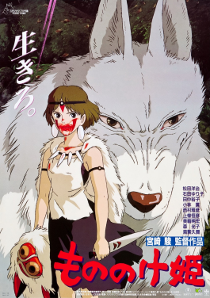
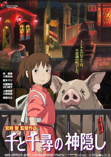

Popular Japanese Anime Movies

Mononoke Hime
- Duration: 2hr 14mins
- Release Year: 1997
- Genre: Action, Adventure, Animation
- Director: Hayao Miyazaki
- Motion Picture Rating: PG - 13
- Cast: Yoji Matsuda, Yuriko Ishida
- Synopsis: On a journey to find the cure for a Tatarigami's curse, Ashitaka finds himself in the middle of a war between the forest gods and Tatara, a mining colony. In this quest he also meets San, the Mononoke Hime.
Rating: 8.4/10

Spirited Away
- Duration: 2hr 5mins
- Release Year: 2001
- Genre: Animation, Adventure, Family
- Director: Hayao Miyazaki
- Motion Picture Rating: PG
- Cast: Rumi Hiiragi, Miyu Irino
- Synopsis: During her family's move to the suburbs, a sullen 10-year-old girl wanders into a world ruled by gods, witches, and spirits, and where humans are changed into beasts.
Rating: 8.6/10
My Neighbour Totoro
- Duration: 1hr 26mins
- Release Year: 1988
- Genre: Animation, Comedy, Family
- Director: Hayao Miyazaki
- Motion Picture Rating: G
- Cast: Hitoshi Takagi, Noriko Hidaka
- Synopsis: When two girls move to the country to be near their ailing mother, they have adventures with the wondrous forest spirits who live nearby.
Rating: 8.1/10
Ponyo
- Duration: 1hr 14mins
- Release Year: 2008
- Genre: Animation, Adventure, Comedy
- Director: Hayao Miyazaki
- Motion Picture Rating: G
- Cast: Kazushige Nagashima, Yuki Amami
- Synopsis: A five-year-old boy develops a relationship with Ponyo, a young goldfish princess who longs to become a human after falling in love with him.
Rating: 7.6/10
Howl's Moving Castle
- Duration: 1hr 59mins
- Release Year: 2004
- Genre: Action, Adventure, Family
- Director: Hayao Miyazaki
- Motion Picture Rating: PG
- Cast: Cheiko Baisho, Takuya Kimura
- Synopsis: When an unconfident young woman is cursed with an old body by a spiteful witch, her only chance of breaking the spell lies with a self-indulgent yet insecure young wizard and his companions in his legged, walking castle
Rating: 8.2/10
.jpg)
.png)